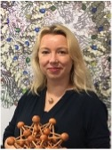

Reidun Twarock is Professor of Mathematical Virology at the University of York. Her research at the interface of mathematical modelling, bioinformatics, biophysics and virology focuses on virus structure, assembly and evolution with applications in virus nanotechnology and antiviral therapy. She is currently an EPSRC Established Career Fellow, a Royal Society Wolfson Fellow, and a Wellcome Trust Investigator. In 2018 she won the Gold Medal of the Institute of Mathematics and Its Applications.